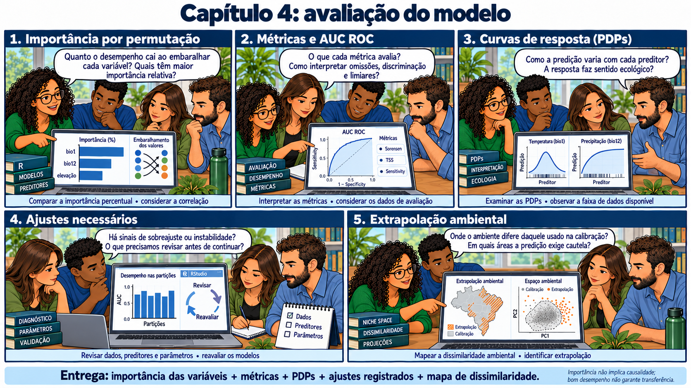
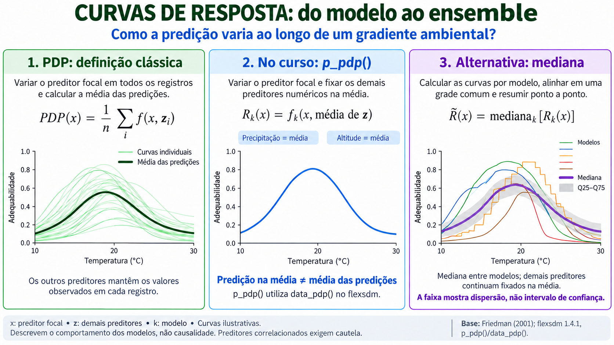

CAPÍTULO 11 · A · Assessment
O mapa é bonito. E a evidência?
Avaliar exige relacionar métricas, desenho e consequência dos erros.
Base no curso: slides 335–379.
O mapa desperta entusiasmo na reunião. Uma pesquisadora interrompe: “Quais pontos foram realmente deixados de fora? Que erro o número resume?” O grupo abre as métricas por partição antes de escrever a primeira conclusão.

Da matriz de confusão às métricas
Depois de aplicar um limiar, uma predição pode ficar acima ou abaixo dele. Omissão é deixar uma presença de referência abaixo do corte. A interpretação de comissão depende do contraste usado: uma pseudoausência classificada como adequada não comprova um erro ecológico de presença. Com background, a ausência real continua desconhecida.
| Métrica | Pergunta que ajuda a responder | Limite |
|---|---|---|
| Sensibilidade / TPR | Que fração das presenças de referência foi recuperada? | Depende do limiar e do conjunto avaliado. |
| Especificidade / TNR | Que fração dos negativos de referência ficou abaixo do limiar? | Pseudoausência não equivale a ausência confirmada. |
| TSS | Qual o balanço de sensibilidade e especificidade, por TPR + TNR − 1? | Depende do contraste, do domínio e do limiar. |
| Sørensen | Como se relacionam acertos positivos, omissões e positivos nos contrastes? | É afetado pela composição da amostra e pelo corte. |
| AUC ROC | Como o modelo ordena positivos e negativos de referência ao variar o corte? | Não prova calibração, mecanismo ou transferência. |
| Boyce | Como a distribuição de presenças se relaciona à disponibilidade ao longo da adequabilidade? | Depende da implementação, dos dados e do domínio. |
# Exemplo sintético de uma matriz de confusão:
TP <- 18; FN <- 2; TN <- 14; FP <- 6
sensibilidade <- TP / (TP + FN)
especificidade <- TN / (TN + FP)
TSS <- sensibilidade + especificidade - 1
sorensen <- 2 * TP / (2 * TP + FP + FN)
c(sensibilidade = sensibilidade, especificidade = especificidade,
TSS = TSS, sorensen = sorensen)Entre as partições
Uma média pode esconder uma região com desempenho fraco. Compare resultados entre partições, quantidade de registros e amplitude ambiental de cada uma. Não use faixas universais de AUC para declarar um modelo excelente; um domínio com contrastes fáceis pode inflar a discriminação sem melhorar a aplicação pretendida.
Curvas e importância

Curvas de resposta ajudam a localizar relações inesperadas. A importância por permutação mede a mudança de desempenho após perturbar um preditor sob um procedimento específico. Colinearidade, distribuição ambiental e dependência entre variáveis afetam a leitura. No script ESM, as curvas condicionais mantêm outras variáveis nas médias e não são PDPs marginalizados.
# Do ajuste do modelo
TPR <- result.select.model$TPR_mean # sensitivity
TNR <- result.select.model$TNR_mean # specificity
WTPRTNR <- result.select.model$W_TPR_TNR_mean
TSS <- result.select.model$TSS_mean
Sorensen <- result.select.model$SORENSEN_mean
Jaccard <- result.select.model$JACCARD_mean
FPB <- result.select.model$FPB_mean # F-measure on presence-background data
OR <- result.select.model$OR_mean
Boyce <- result.select.model$BOYCE_mean